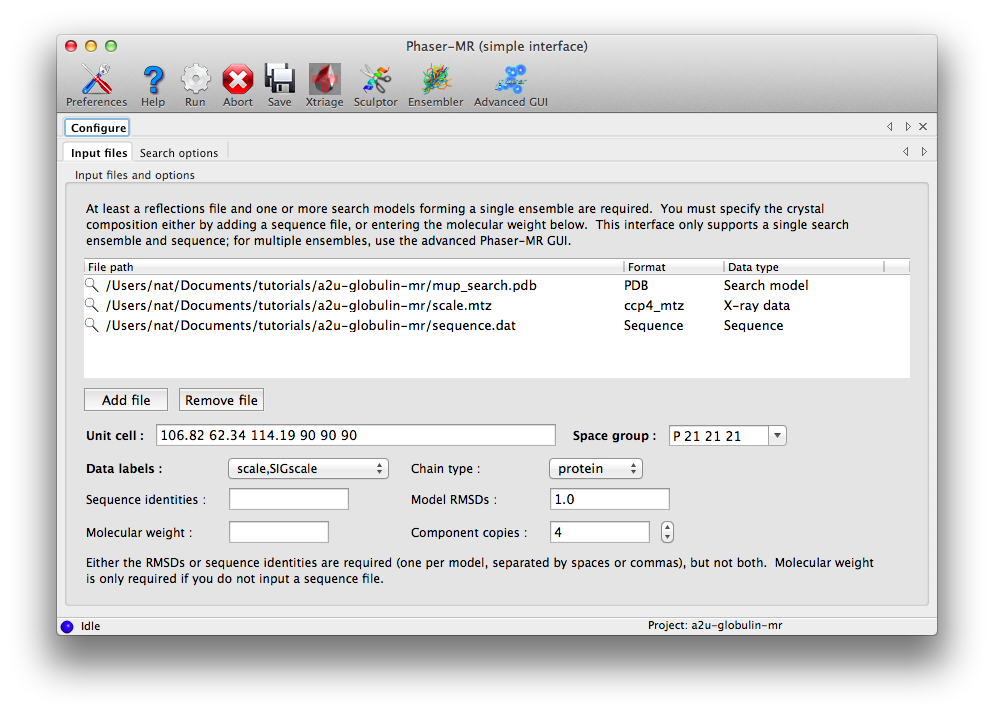
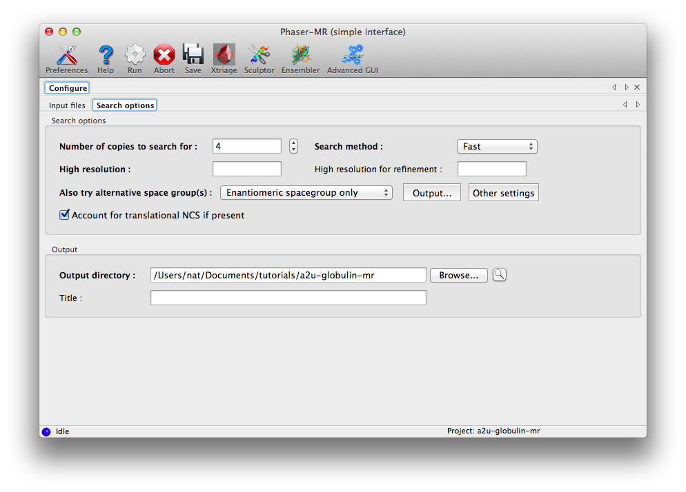
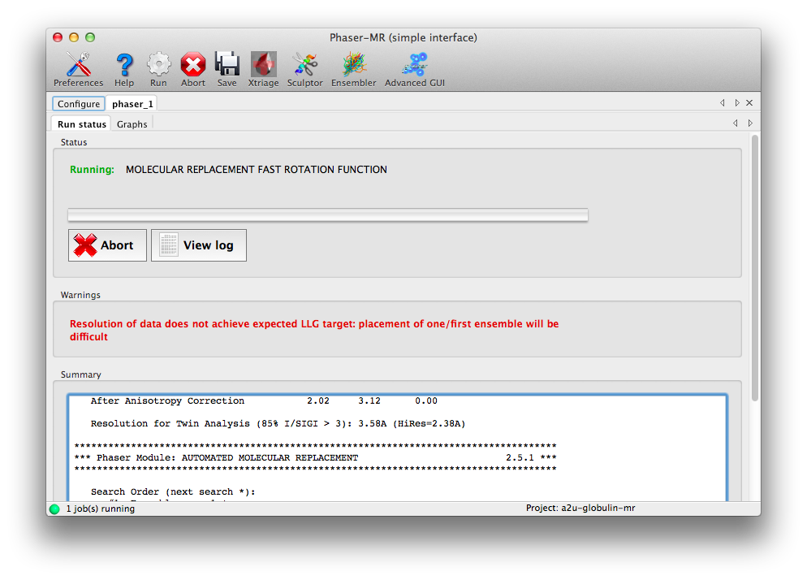
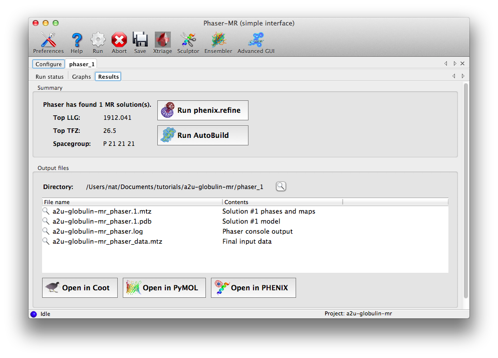
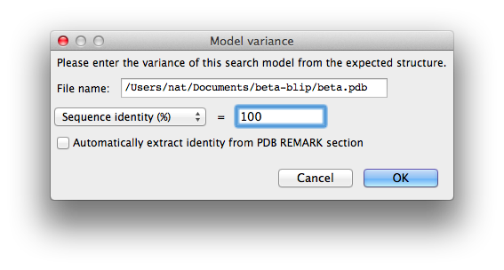
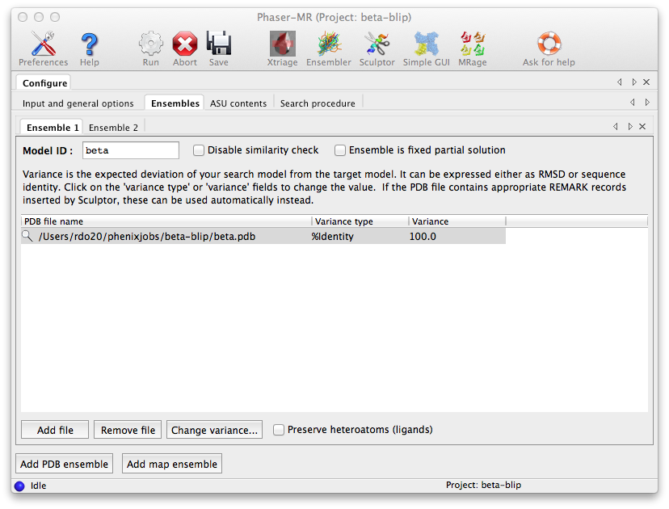
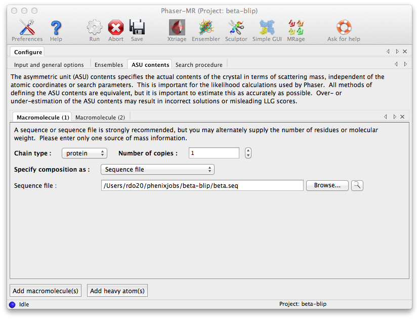
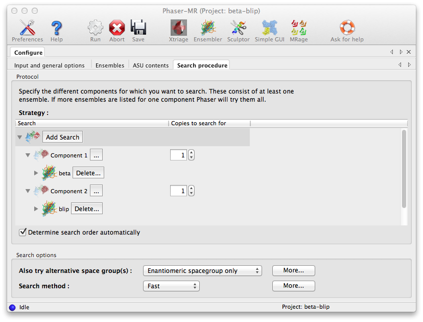
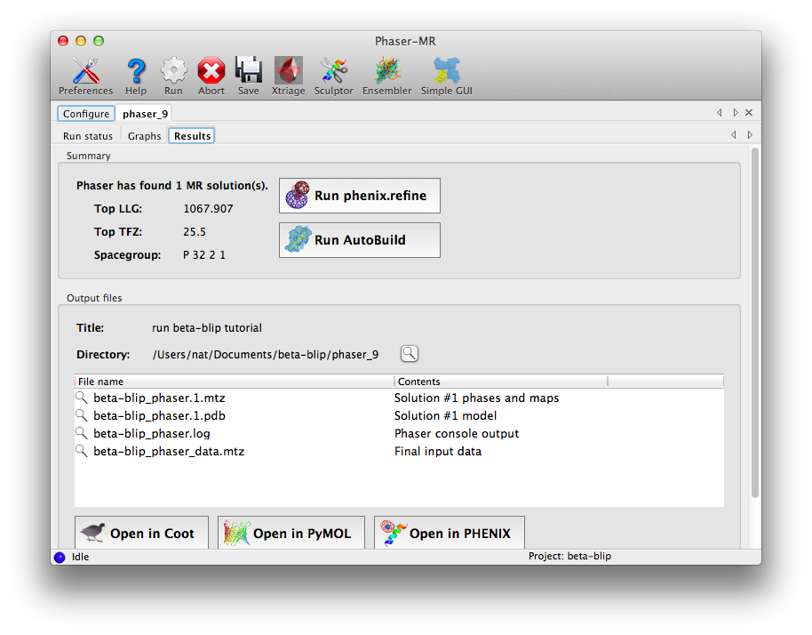

This tutorial shows how to use the Phaser-MR GUIs to solve structures by molecular replacement, using example data included with the Phenix distribution. We recommend reading the MR overview before running these tutorials (and for adventurous users, the primary Phaser reference as well).
A brief word about terminology: the search models used in Phaser are customarily named "ensembles", and in fact Phaser will often work best in difficult cases when a set of superposed models (generated using Ensembler or similar tools) is used. However, this is not required and for easily solved structures, such as the tutorial datasets used here, a single PDB file will be sufficient. Furthermore, while Phaser can search for multiple alternative ensembles and output only the best solution, here we will use just one candidate per component. Also note that the search models used here are single proteins, but this is not a requirement if the relative orientation of multiple chains are known (such as physiological dimers, multi-subunit complexes, or DNA helices).
An essential feature of Phaser is that it scores possible solutions based on the expected asymmetric unit cell (ASU) contents (that is, the scattering mass). Therefore, for the examples shown here, we will be supplying sequence files for the crystallized proteins. We could, however, specify the molecular weight or number of residues instead. Importantly, the manner in which the ASU contents is specified is completely decoupled from the "ensemble" (search model) input; where multiple proteins have been crystallized, we could supply separate sequence files (as is done here for the beta-blip example) or a single file with multiple sequences, and the result will be identical. While it is technically possible to run Phaser with just a search model and extrapolate the molecular weight based on the desired number of copies, this is not recommended.
The separate MRage program (which uses Phaser as its core) can automatically discover and prepare search models, and search in parallel on a multi-core workstation or cluster. A separate tutorial is available on the Phaser home page.
For homogeneous structures where only one component needs to be placed, a streamlined interface is available. The tutorial data for this example is the A2U-globulin structure, which includes one each of data, PDB, and sequence files. In this interface, it is assumed that multiple PDB files are part of a single ensemble; if you instead want to try multiple equally likely ensembles and let Phaser pick the best one, use the advanced interface (described below).
Start the GUI by clicking "Phaser-MR (simple one-component interface)", the second item in the list under "Molecular replacement." This interface has a single input field for all file types, and on most operating systems you can simply drag the three files from the project folder into the input field. Alternatively, click "Add file" to open a file dialog.

The symmetry information and labels list will automatically be populated when the reflections are loaded; you do not need to change the defaults. You must enter either the sequence identity or RMSD for each model in the ensemble; in this case an RMSD of 1.0 is appropriate for the single model used. If you have no specific idea of the accuracy of the model, it is best to simply provide the sequence identity to the target and let Phaser provide the corresponding RMSD. Because we already entered a sequence, no molecular weight is required, but the value for "Component copies" should be set to 4.
The next tab contains basic search options; you should change "Number of copies to search for" to 4. (While it may seem inefficient to specify the number of component copies and the number of search copies separately, this would allow us to search for a tetramer, while still only supplying the sequence of one chain.)

Usually it is best not to specify a resolution limit. Phaser chooses a resolution limit based on the particular problem (accuracy and completeness of the model, number of reflections). If the problem is expected to be straightforward, the resolution will automatically be limited to reduce runtime while preserving an excellent chance of solving the structure on the first pass.
The other controls on this tab do not need to be modified, but the option for alternative space groups deserves special mention. If there is any ambiguity about the precise space group, for instance if the data were processed as P222 but the exact combination of screw axes is unknown, or the space group could be either P6(1) or P6(5), Phaser can try multiple space groups and identify the best one at the translation function stage. The default is to try only the original space group and its enantiomer (if any); this will have no effect for the examples used here (the MTZ files already contain the correct symmetry), but it would be appropriate for the P6(1) versus P6(5) case. The most permissive setting is "All possible in the same pointgroup".
Now we are ready to run Phaser: click the Run button on the toolbar. A new tab will appear with a status panel, a list of warnings, and summary output (basically excerpted from the log file). For many structures (including this one) there will be one or more warnings, but these do not necessarily mean that Phaser will not be successful. This example should finish in several minutes.

Once the run is complete, a results tab will appear, showing a summary of the solution and output files, with buttons to launch other programs. The two statistics reported are the log-likelihood gain (LLG), which expresses the probability of this solution compared to a random-atom model, and the translation function Z-score, which denotes the signal-to-noise ratio of the solution. In this case both are excellent, indicating that Phaser found an unambiguous solution.

At this point we recommend inspecting the maps and crystal packing in Coot. Because Phaser only performs rigid-body and group B-factor refinement, the map quality will most likely be relatively poor compared to a refined map, with many unexplained difference peaks, but the map should still be interpretable for a correct solution.
The appropriate next step would be either rebuilding or refinement, both of which can be launched directly from the results tab. For this example we could go straight to refinement; if the structure was instead solved using homologous proteins, running AutoBuild would be a better choice.
The interface for multi-component and other more difficult searches is considerably more complicated, especially since the ensemble and ASU contents inputs are split up. The tutorial data for this example is "TEM-1 Beta-lactamase/beta-lactamase inhibitor complex" (or "beta-blip"), and includes five files: an MTZ file and two each of search models and sequence files.
Start the standard Phaser-MR GUI by clicking "Phaser-MR" under the "Molecular replacement" section. The first tab that appears defines the experimental data; click "Browse..." next to the "Data file" field and select the file named "beta_blip_P3221.mtz". The unit cell and space group will be automatically filled in, and the "Data labels" menu will be populated with suitable choices (only one in this case).

The other options in this window are equivalent to those in the simple interface, and do not need to be modified, though it is always a good idea to provide a title for the job.
The second tab, "Ensembles", is where the search models are entered. First we will load the beta-lactamase model: for "Model ID", enter "beta", then click "Add file" below the list widget and select "beta.pdb". This will add it to the list with the "Variance" field blank. Click the "Change variance" button, and enter "100" for the sequence identity and click "OK".

The window should now look like this:

At the bottom of the window, click "Add PDB ensemble". A second ensemble sub-tab will appear. Now repeat the procedure using "blip.pdb" instead. (The order in which these ensembles are input is technically not important, because Phaser will normally determine the appropriate search order automatically. However, in this case Phaser will indeed search for beta first, because it is a significantly larger protein.)
The third configuration tab, "ASU contents", is where we tell Phaser what scattering mass to expect in the crystal. If we know the exact molecular weight (or number of residues) of the entire structure, we could simply enter that here, but we will use sequences instead. This has the advantage that the sequences are then available if we launch AutoBuild from the Results tab. The files "beta.seq" and "blip.seq" should be input in the "Sequence file" field in successive tabs; click the button "Add macromolecule(s)" at the bottom of the window to add a tab. The number of copies is 1 in both cases. (Here the order in which the ASU contents is input really is unimportant.)

The final configuration tab, "Search procedure", is where we tell Phaser how to use the ensembles we input. Initially only the "Component 1" branch is shown. Click on the triple dotted button to its right and a menu will appear allowing us to select which of the two ensembles defined earlier Phaser should search for. The up-down spin button in the rightmost column lets us specify how many copies of this component we want Phaser to attempt to place in the ASU. We select the beta ensemble for the first component and choose to search for one copy. To specify the blip component we press the "Add Search" button, which will add another Component branch to the Search GUI. As before we instruct Phaser to search for one component but with the blip ensemble.
Note: Selecting both ensembles to be searched for in one component would mean that Phaser would try them in turn as alternative choices of model for the same component, and then select the ensemble yielding the best result.

At this point we are ready to run Phaser, which should again take only a few minutes to complete successfully.

Note that the Results tab that appears at the end of the job allows us easily to launch either the phenix.refine or AutoBuild GUI, with many of the fields pre-filled. If the data provided to Phaser had included Friedel pairs (i.e. anomalous data), then a button would also be available to launch the AutoSol GUI for MR-SAD phasing.